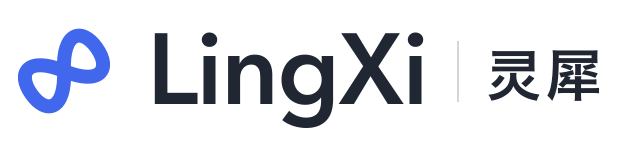
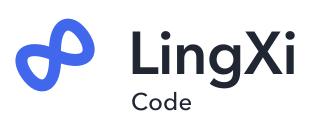
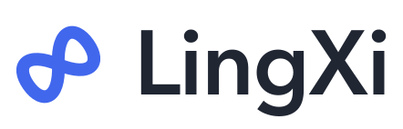
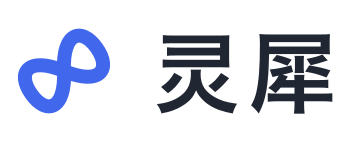

LINGXI IDENTITY SYSTEM 01 / 2026
灵犀结 · RESONANCE LINK
心有灵犀，
万事相连。
一个连接的符号，一套共同的名字。
从想法、对话，到每一步行动。

相知 · 相连 · 相成LX—01
01一个母标志双环相连，让所有入口拥有同一张面孔。
02一套名称LingXi + 产品后缀，中英文各有清晰写法。
03一种秩序颜色与功能符号区分产品，名称始终相伴。
01 / FAMILY
同源，各有所长。
同一枚灵犀结。
七种角色，共同组成灵犀。
产品 · Code / Chat / Control / Apps功能 · Remote开发者组件 · Harness / SDK
02 / IN CONTEXT
放进产品，依然是灵犀。
工作空间

把想法变成作品
今天，想一起完成什么？
品牌应用示意
启动图标 / LAUNCHER灵犀
LingXi Code
16 PX · 与名称共同出现
03 / WORDMARK



英文固定 LingXi，L、X 大写。
中文字标使用「灵犀」；产品后缀沿用标准名称。
04 / SMALL & CLEAR
小到一个标签页，
也能一眼认出。
单色成立，深浅皆宜。
16–32 px 省略产品小符号。
05 / PALETTE
灵犀蓝LINGXI BLUE
#4167ED
#4167ED
墨色INK
#202632
#202632
纸白PAPER
#F6F5F0
#F6F5F0
纯白WHITE
#FFFFFF
#FFFFFF
06 / NAMING
名字清晰，品牌一致。
| 产品 / 角色 | 英文名称 | 中文名称 | 启动标签（中文） |
|---|
命名提案：Computer Use 对外显示为 LingXi Control / 灵犀操控；主应用保留 LingXi Code 完整名称，启动标签为 灵犀 / LingXi。Remote 为功能标识，Harness 与 SDK 为开发者组件。技术包名、仓库名与应用 ID 保持各自定义。